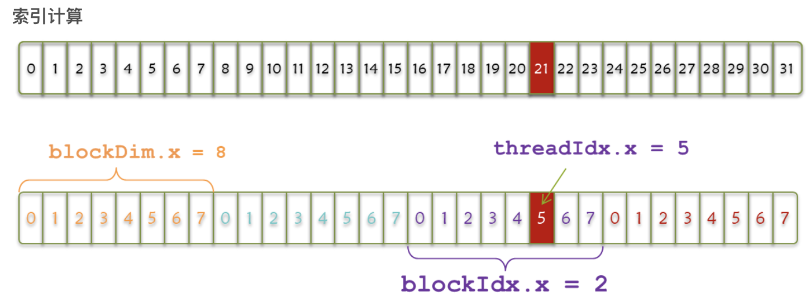
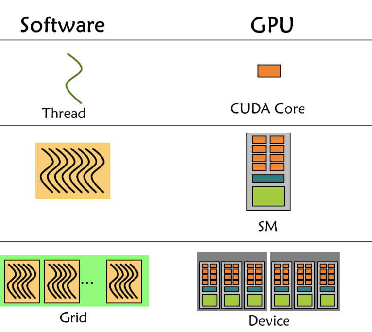
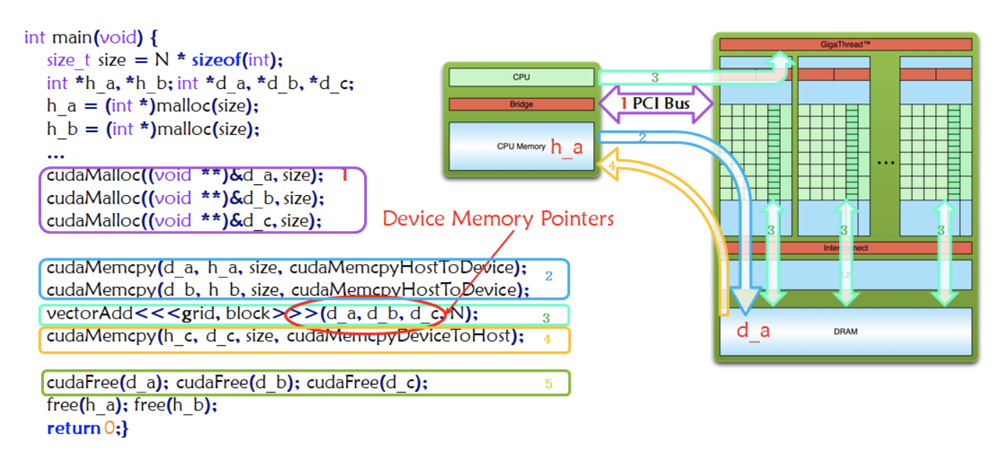

Abstract
上周的研究生复试终于结束了，想起来真是做梦一样。
准备复试的过程中一直在看赵博士的《多面体编译理论与深度学习实践》这本书，两个月看完。发现自己对并行计算和编译器在并行性局部性挖掘方面的理解又深入了一点点。好处是终于有大把的时间来做想做的事情，又很担心学过的东西不成体系。
PPCG和Pluto都是面向polyhedral模型的source-to-sourcee编译器，前者支持OpenMP/CUDA/OpenCL代码生成，后者支持OpenMP代码生成。我不知怎么的就得出结论——想搞好编译器就要学好并行计算，那搞编译器的人是不是可以归到体系结构HPC这一波？我觉得差不多吧。
现阶段的HPC离不开CUDA，就像西方离不开耶路撒冷。
基本架构与计算
根据冯诺依曼体系，代码可以分为数据和指令——故并行也分为数据级并行和指令级并行。而为了实现这两种并行，需要对体系结构做出不同的设计。
Flynn's Taxonomy
根据指令和数据进入CPU的方式分为：
SISDSIMD并行架构，如向量机MISDMIMD并行架构，多核心多指令，实现空间上的并行（一般包括SIMD，MMD有多核，单核支持SIMD）
内存模型
根据内存模型分为：
- 分布式多节点系统 （集群）
- 共享内存的多处理器系统
- 多片处理器
- 单片多核（众核）
我们常见的GPU就属于众核。和CPU的区别在于砍掉了许多复杂的逻辑比如分支预测，只进行数据运算，吞吐量更大。
评价指标
- （降低）延迟： 操作从开始到结束需要的时间，一般用微妙计算，延迟越低越好
- （提高）带宽： 单位时间内处理的数据量，一般用
MB/s或者GB/s表示 - （增加）吞吐量：单位时间内成功处理的运算数量，一般用
gflops（十亿次浮点计算）表示
其中吞吐量和延迟有一定关系，都是反应计算速度的。一个是时间除以运算次数——得到单位次数用的时间（延迟）。一个是运算次数除以时间，得到的是单位时间执行次数（吞吐量）。
异构计算与CUDA
一个异构应用包括两种以上架构：
- 主机代码（CPU）
- 设备代码（GPU）
一般通过PCIE总线互连(8GB/s~16GB/s)。而衡量GPU计算能力的容量指标：主要靠CUDA核心数量（越多越好）以及内存大小（越大越好）。衡量GPU计算能力的性能指标： 峰值计算能力以及内存带宽。
CUDA线程层次
抽象层次
Thread: sequential execution unit- 所有线程执行相同的核函数（注意与
CPU多线程的区别），并行执行 thread是最基本单元，32个thread组成一个wrap，一个wrap对应一条指令流
- 所有线程执行相同的核函数（注意与
Thread Block: a group of threads- 执行在一个
Streaing Multiprocessor(SM) - 同一个
Block中的线程可以协作，Block内部的线程可以共享存储单元，SM是硬件层次，一个硬件SM可以执行多个block，一个block只能在一个SM中执行

- 执行在一个
Thread Grid: a collection of thread blocks- 一个
Grid当中的block可以在多个SM中执行
- 一个
代码层次
通常用dim3这个数据类型来制定Grid和Block的大小，dim3是结构体有三个元素x, y, z分别代表三个维度上的大小，至少指定一个变量，其他不指定默认为1。 在代码层面使用的变量分别为：
threadIdx.[x,y,z]执行当前核函数的线程在block中的索引值blockIdx.[x,y,z]执行当前核函数所在block在Grid中的索引值blockDim.[x,y,z]表示一个block中包含多少线程gridDim.[x,y,z]表示一个grid中包含多少个block
1 | __global__ void add(int *a, int *b, int *c) { |
上述程序实际上的设备运行：
1 | /// GPU上多个线程执行相同的指令，并且同时运行，但是不同的数据（数据并行） |
硬件层次
GPU硬件中存在三个层次——core, SM, Device，CUDA分3个软件层次thread, block, grid正好对应。

grid是GPU调度的单位，block是SM调度单位，thread/wrap是CUDA core调度单位。
线程索引
如下图，一个wrap共32个线程，分为4个block，其中threadIdx.x代表数组内索引，blockIdx.x代表数组间索引，blockDim.x代表每个block内线程的个数。
1 | int index = threadIdx.x + blockIdx.x * blockDim.x |
CUDA执行
一个CUDA应用通常可以分为CPU主机端代码和GPU设备端代码。NVCC编译器会自动分离代码中不同的部分，主机代码用C编写；设备端代码也就是核函数（CUDA模型上诸多线程中运行的那段代码），用CUDA C编写。CUDA C是编译型语言，其编程模型主要有：核函数，内存管理，线程管理和流。
作为典型的异构计算，一个CUDA程序分为以下步骤：

- Allocate GPU Memories（图中紫色框标注1） 分配内存
- Copy data from CPU to GPU（图中蓝色框标注2） 拷贝内存到GPU设备
- Invoke the CUDA Kernel（图中绿色框标注3） 调用核函数计算
- Copy result from GPU to CPU（图中橙色框标注4） 完成计算的数据拷贝回主机
- Release GPU Memories（图中绿色框标注5）内存销毁
从host的串行到调用核函数，核函数被调用后控制马上归还主机线程，也就是在第一个并行代码执行时，很有可能第二段host代码已经开始同步执行了。
故要写好CUDA程序，要重点关注核函数编写，线程层次和内存模型。